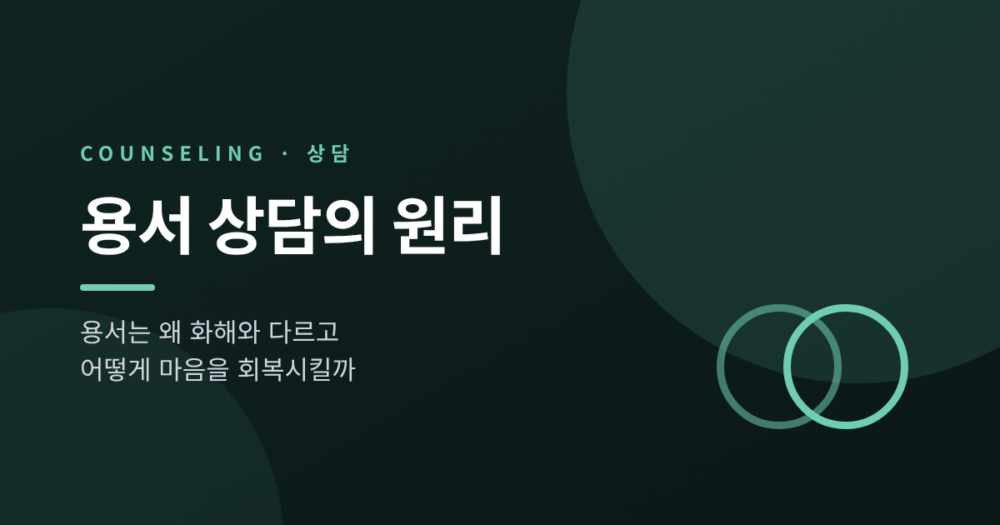
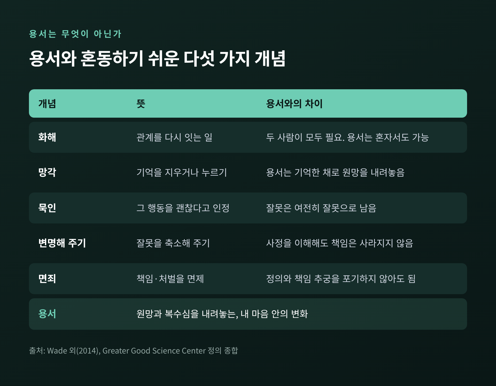
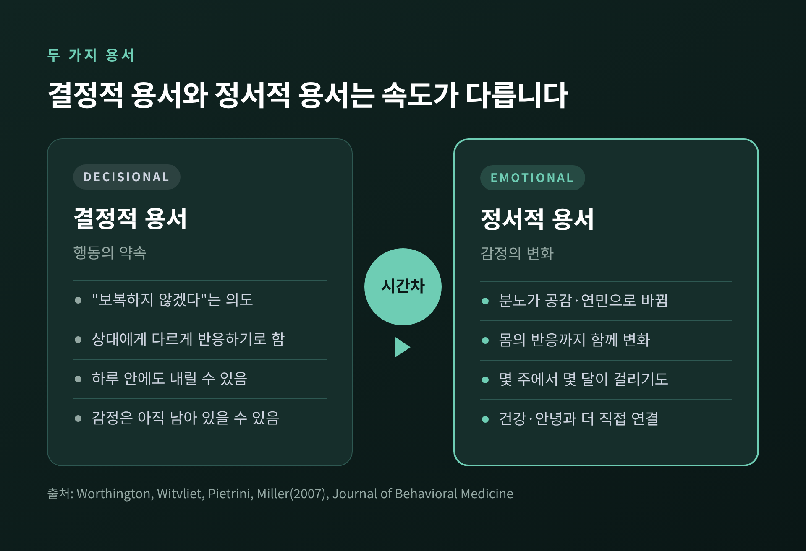
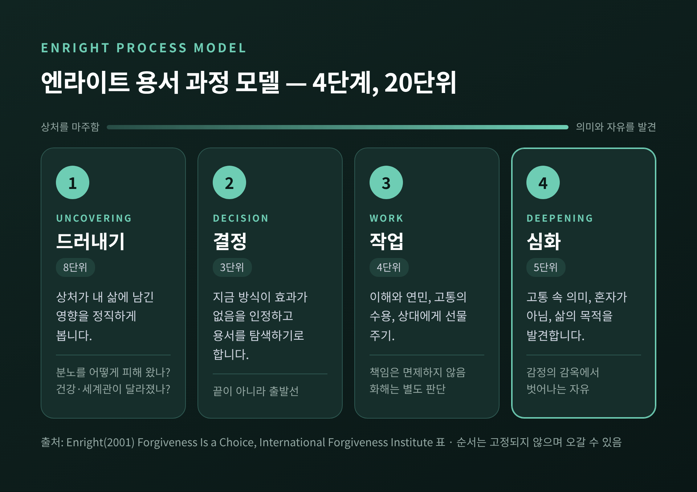
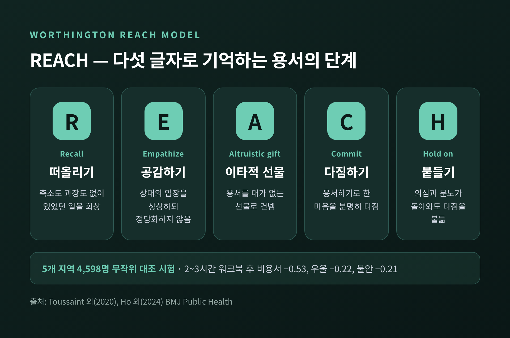
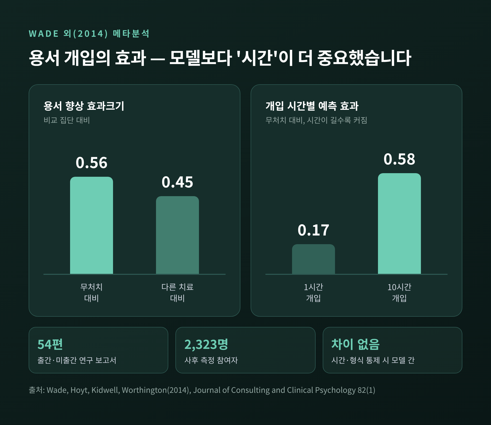
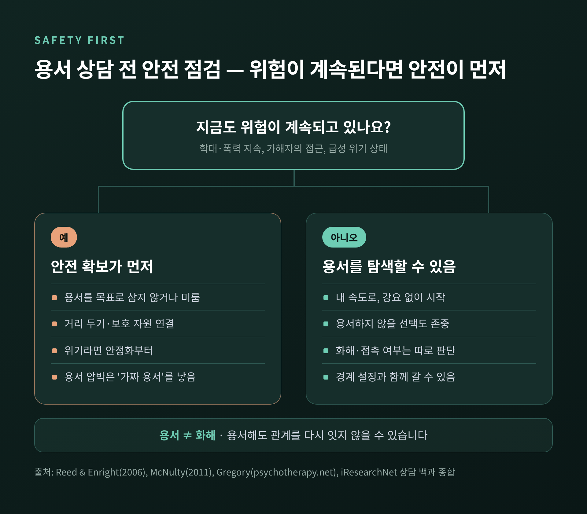

용서 상담의 원리 — 용서는 왜 화해와 다르고 어떻게 마음을 회복시킬까

이번 글에서는 용서 상담의 원리를 정리해 보겠습니다. 상담에서 말하는 용서는 "없던 일로 하자"는 뜻이 아닙니다.
먼저 요점 세 가지를 적어 둡니다.
- 용서는 내 마음 안에서 일어나는 변화이고, 화해는 두 사람이 함께 만드는 관계 회복입니다. 용서해도 관계를 끊을 수 있습니다.
- 대표적인 방법으로 엔라이트의 4단계 과정 모델과 워딩턴의 REACH 모델이 있습니다. 54편의 연구를 묶은 메타분석에서 용서 개입은 아무것도 하지 않은 경우보다 분명한 효과를 보였습니다.
- 다만 학대나 위험이 계속되는 관계라면 용서보다 안전이 먼저입니다.
■ 용서는 무엇이 '아닌가'부터
용서라는 말에는 오해가 많이 붙어 있습니다. 상담은 그 오해를 걷어내는 데서 시작합니다.
용서 개입 연구를 종합한 Wade와 동료들(2014)은 용서를 "주로 개인 내면의 경험"이라고 정의합니다. 가해자를 향한 분노와 복수의 생각·감정·동기가 줄고, 그 자리에 조금씩 긍정적인 마음이 들어서는 변화입니다. 그래서 용서는 상대와의 화해를 필요로 하지 않습니다.
UC 버클리 그레이터 굿 사이언스 센터의 설명도 같은 방향입니다. 용서는 상대가 그럴 자격이 있든 없든 원망과 복수심을 내려놓겠다는 의식적인 결정입니다. 그렇다고 잘못의 심각성을 부정하거나, 법적 책임을 면제해 주는 것도 아닙니다.

정리하면 다섯 가지를 구분할 수 있습니다.
- 화해와 다릅니다. 화해는 관계를 되살리는 일이라 두 사람이 모두 필요합니다. 용서는 한 사람의 마음에서도 완성됩니다.
- 망각이 아닙니다. 기억을 지우거나 억누르는 일이 아닙니다.
- 묵인이 아닙니다. 그 행동이 괜찮았다고 인정하는 것이 아닙니다.
- 변명해 주기가 아닙니다. 가해자의 사정을 이해한다고 해서 책임이 사라지지는 않습니다.
- 면죄가 아닙니다. 정의나 책임 추궁을 포기하지 않아도 용서할 수 있습니다.
하버드 인간번영 프로그램의 글은 한 가지를 더 짚습니다. 상대가 잘못을 인정하지 않아도, 심지어 이미 세상을 떠난 사람에게도 용서는 가능하다는 점입니다. 용서의 주인이 상대가 아니라 나라는 뜻이기도 합니다.
■ 결정적 용서와 정서적 용서
"용서하기로 했는데 왜 여전히 화가 날까요?" 상담실에서 자주 듣는 질문입니다. 워딩턴과 동료들(2007)의 구분이 이 질문에 답을 줍니다.
결정적 용서는 비용서적 태도에 저항하고 상대에게 다르게 반응하겠다는 행동의 의도입니다. "이제 보복하지 않겠다, 험담하지 않겠다"는 약속에 가깝습니다.
정서적 용서는 부정적인 감정이 공감이나 연민 같은 타인지향적 감정으로 바뀌는 것입니다. 이 변화는 몸의 반응까지 함께 바뀌는 과정이어서, 건강과 안녕에 더 직접적인 영향을 준다고 봅니다.

예전에는 결심만 하면 마음도 따라와야 한다고 여기기 쉬웠습니다. 지금 상담에서는 둘 사이에 시간차가 있는 것을 자연스럽게 봅니다. 결정은 하루에도 할 수 있지만, 감정이 바뀌는 데는 몇 주나 몇 달이 걸릴 수 있습니다.
결정이 무의미하다는 뜻은 아닙니다. 다만 다섯 개의 메타분석을 검토한 Recine(2015)는 과정을 차근차근 밟는 개입이 짧은 결정 중심 개입보다 효과적이었다고 정리했습니다. 결정은 출발선이고, 회복은 그 뒤의 작업에서 일어난다는 의미로 읽힙니다.
■ 엔라이트의 용서 과정 모델 — 네 단계, 스무 걸음
심리학자 로버트 엔라이트(Robert Enright)가 만든 과정 모델은 용서를 네 단계로 나눕니다. 그의 책 『용서는 선택이다(Forgiveness Is a Choice)』에 실린 표준판은 이를 다시 20개 단위로 쪼갭니다.

1단계 드러내기(8단위). 상처가 내 삶에 남긴 흔적을 정직하게 들여다봅니다. 분노를 피해 온 방식, 감춰 둔 수치심, 건강에 미친 영향, 상대에 대한 집착, 세상을 보는 눈의 변화까지 하나씩 묻습니다. 고통스러운 단계라 일상을 유지할 수 있는 속도로 진행하는 것이 중요합니다.
2단계 결정(3단위). 지금까지의 방식이 효과가 없었음을 인정하고, 용서라는 길을 탐색해 보겠다고 마음먹습니다. 복수 생각을 내려놓는 것이 첫걸음입니다. 끝이 아니라 시작점입니다.
3단계 작업(4단위). 상대를 한 사람으로 다시 이해해 보고, 가능하다면 연민으로 나아갑니다. 고통을 받아들이되, 내가 그 고통을 받아 마땅해서가 아님을 압니다. 그 고통을 다른 사람에게 떠넘기지 않는 것도 이 단계의 과제입니다. 마지막 단위는 '상대에게 선물 주기'입니다. 다만 화해 여부는 신뢰와 안전을 따져 따로 판단합니다.
4단계 심화(5단위). 고통 속에서 의미를 발견하고, 나 역시 용서가 필요한 사람임을 깨닫고, 혼자가 아님을 느낍니다. 삶의 목적과 용서의 자유를 발견하는 것으로 과정이 마무리됩니다.
이 단계는 계단처럼 정해진 순서가 아닙니다. 앞뒤를 오가거나 일부만 경험하는 경우도 많습니다. 참고로 일부 해설서는 이를 33개 '길잡이'로 더 잘게 나누기도 해, 세부 개수는 판본마다 조금씩 다릅니다.
이 모델의 효과를 보여 준 대표 연구가 있습니다. Freedman과 Enright(1996)는 어린 시절 근친 성폭력을 겪은 여성 12명을 대상으로 평균 14.3개월간 주 1회 개인 상담을 진행했습니다. 그 결과 대기 집단보다 용서와 희망이 커지고 불안과 우울은 더 많이 줄었습니다. 대기 집단도 나중에 같은 프로그램을 받자 비슷한 변화를 보였습니다.
■ 워딩턴의 REACH 모델 — 다섯 글자로 기억하는 용서
에버렛 워딩턴(Everett Worthington)은 더 짧고 기억하기 쉬운 모델을 내놓았습니다. 다섯 단계의 머리글자를 따서 REACH라고 부릅니다.

- R(Recall) 상처 떠올리기 — 축소하지도 부풀리지도 않고, 있었던 일을 있는 그대로 회상합니다.
- E(Empathize) 공감하기 — 상대가 왜 그렇게 행동했을지 그의 입장에서 상상해 봅니다. 잘못을 정당화하는 것과는 다릅니다.
- A(Altruistic gift) 이타적 선물 — 용서를 상대가 갚아야 할 빚이 아니라 대가 없는 선물로 건넵니다.
- C(Commit) 다짐하기 — 용서하기로 한 마음을 분명히 다짐합니다.
- H(Hold on) 붙들기 — 의심이나 분노가 다시 올라와도 그 다짐을 붙듭니다.
REACH는 주로 정서적 용서를 겨냥합니다. 6~9시간 정도의 집단 프로그램이나 혼자 해 보는 워크북 형태로 많이 쓰입니다.
2024년 『BMJ 공중보건(BMJ Public Health)』에 실린 Ho와 동료들의 연구는 이 방식의 확장 가능성을 보여 줍니다. 콜롬비아·홍콩·인도네시아·남아공·우크라이나 다섯 지역에서 4,598명을 분석한 무작위 대조 시험입니다. 2~3시간 분량의 자가 워크북을 바로 받은 집단은, 2주 늦게 받은 집단보다 비용서 점수가 표준화 평균차 0.53만큼 낮았습니다. 우울(0.22)과 불안(0.21)도 함께 줄었습니다. 상담실에 오기 어려운 사람에게도 닿을 수 있는 도구라는 점이 의미 있습니다.
■ 연구는 무엇을 말하나 — 효과와 '시간'의 힘
용서 상담이 정말 효과가 있을까요. 가장 포괄적인 근거는 Wade, Hoyt, Kidwell, Worthington(2014)의 메타분석입니다. 54편의 출간·미출간 연구를 모았고, 사후 측정 참여자는 2,323명입니다.

용서 개입을 받은 사람들은 아무 처치도 받지 않은 사람들보다 용서 수준이 효과크기 0.56만큼 높아졌습니다. 다른 심리치료를 받은 비교 집단과 견주어도 0.45만큼 앞섰습니다. 우울, 불안, 희망에서도 무처치 집단보다 큰 변화가 나타났습니다.
흥미로운 결과는 따로 있습니다. 효과를 가장 잘 예측한 것은 '어떤 모델이냐'가 아니라 '얼마나 오래 했느냐'였습니다. 예측 효과는 1시간짜리 개입에서 약 0.17, 10시간짜리 개입에서 약 0.58이었습니다.
처음에는 엔라이트 모델이 REACH보다 효과가 커 보였습니다. 하지만 엔라이트 개입은 평균 15.4시간, REACH는 5.6시간으로 길이가 크게 달랐습니다. 시간과 진행 형식을 통제하자 두 모델의 차이는 통계적으로 의미가 없어졌습니다.
Akhtar와 Barlow의 메타분석도 비슷한 그림을 보여 줍니다. 대인 상처나 폭력을 경험한 사람들에게 과정 중심 용서 개입을 했을 때 우울(−0.37), 분노·적대감(−0.49), 스트레스(−0.66)가 줄었습니다.
물론 한계도 있습니다. 연구마다 용서를 재는 척도가 다르고, 용서의 정의에 대한 합의도 완전하지 않습니다. 상당수 연구가 소규모이고 자기보고에 의존한다는 점도 감안해야 합니다. 그리고 우울·불안에 대한 효과는 용서 자체에 대한 효과의 대략 절반 크기라는 분석이 함께 나옵니다. 용서 상담이 모든 마음의 병을 대신할 수는 없다는 뜻입니다.
■ 용서를 권하면 안 되는 때 — 안전이 먼저입니다
용서가 언제나 좋은 것은 아닙니다. 이 부분을 빼면 용서 상담은 오히려 위험해질 수 있습니다.
McNulty(2011)는 신혼부부를 결혼 첫 4년간 추적했습니다. 잘 용서하는 배우자의 파트너는 심리적·신체적 공격성이 그대로 유지됐습니다. 반면 덜 용서하는 배우자의 파트너에게서는 공격성이 줄었습니다. 연구자는 용서가 분노나 비판 같은 '대가'를 없애, 가해자가 같은 행동을 반복해도 괜찮다고 느끼게 할 수 있다고 해석했습니다.
트라우마 치료자 Amanda Ann Gregory도 같은 점을 경고합니다. 생존자는 실제로 안전해야 하고, 스스로도 안전하다고 느껴야 비로소 진정한 용서를 생각할 수 있다는 것입니다. 용서를 화해로 착각해 다시 연락하거나 같은 공간으로 돌아갔다가 상처가 되살아나는 일도 생깁니다.
그래서 상담자는 다음과 같은 경우 용서를 목표로 삼지 않거나 뒤로 미룹니다.
- 학대나 폭력이 지금도 이어지는 관계
- 가해자가 여전히 쉽게 접근할 수 있는 상황
- 자살 생각이나 극심한 위기처럼 안정이 먼저 필요한 상태
- 주변의 압박 때문에 '용서해야 한다'고 느끼는 경우
조급하게 밀어붙인 용서는 분노와 상처를 덮어 둘 뿐인 '가짜 용서'가 되기 쉽습니다. 용서하지 않기로 하는 선택도 존중받아야 합니다.
엔라이트 측 연구도 이 원칙을 지킵니다. Reed와 Enright(2006)는 정서적 학대를 겪은 여성을 대상으로 했는데, 현재 학대 관계에 있는 사람은 처음부터 제외했습니다. 참여자는 모두 2년 이상 영구 별거하거나 이혼한 상태였습니다. 이별 초기의 '거짓 용서'를 피하려는 장치였습니다. 이 연구에서 용서 상담은 대안 치료보다 우울을 더 크게 낮췄습니다(BDI-II 점수 16.2→5.4). 화해나 상대와의 접촉은 전혀 요구하지 않았습니다. 안전이 확보된 뒤의 용서는 관계를 되돌리는 일이 아니라, 나를 되찾는 일에 가깝다는 사실을 보여 줍니다.

■ 일상과 가족 관계에서는 이렇게
용서 상담의 원리는 큰 상처에만 쓰이지 않습니다. 매일 부딪히는 관계에도 적용할 수 있습니다. 아래는 이해를 돕기 위한 일반화된 가상 사례입니다.
직장 동료와의 갈등. 회의 자리에서 동료가 내 아이디어를 자기 것처럼 말했다고 해 보겠습니다. REACH의 첫 단계처럼 일어난 일을 있는 그대로 적어 봅니다. "늘 나를 무시한다" 같은 과장은 걷어냅니다. 그다음 그가 받고 있었을 평가 압박을 상상해 봅니다. 용서는 하되, 다음 회의 전에는 내 기여를 기록으로 남기겠다고 정합니다. 용서와 경계 설정은 함께 갈 수 있습니다.
오래된 가족의 상처. 성인이 된 자녀가 어린 시절 부모에게 들었던 비난을 아직 기억한다고 해 보겠습니다. 엔라이트의 드러내기 단계처럼, 그 말이 지금 나의 자존감과 인간관계에 어떤 흔적을 남겼는지 먼저 살핍니다. 부모를 이해하는 과정에서 부모 역시 서툰 양육을 물려받았다는 사실을 발견할 수도 있습니다. 그렇다고 반드시 그 이야기를 부모 앞에서 꺼내거나 관계를 예전처럼 되돌려야 하는 것은 아닙니다. 화해는 상대도 함께 준비되었을 때 따로 시도하면 됩니다.
부부·연인 사이의 반복되는 다툼. 같은 상처가 반복된다면 용서만으로는 부족합니다. 앞서 본 McNulty의 연구처럼, 대가 없는 용서가 같은 행동을 굳힐 수도 있습니다. "용서한다"는 마음과 "이 행동은 바뀌어야 한다"는 요구를 함께 전하는 편이 건강합니다.
가족 안에서 용서를 배우는 일은 다음 세대로도 이어집니다. 북아일랜드 벨파스트의 한 연구(Magnuson 외, 2009)에서는 자녀에게 용서를 가르친 부모 자신의 용서 수준이 함께 높아졌습니다.
정리하면 이렇습니다.
용서는 잘못을 잊거나 덮어 주는 일이 아닙니다. 상처를 정직하게 들여다보고, 원망이 나를 지배하지 않도록 내 마음의 자리를 되찾는 과정입니다. 그 과정은 결심에서 시작해 시간이 쌓이며 깊어지고, 화해는 그와 별개로 선택할 수 있습니다.
"용서는 상대에게 주는 면죄부가 아니라, 나에게 돌려주는 자유입니다."
혼자 이 과정을 감당하기 어렵다면 전문상담사와 함께하시길 권합니다. 청소년이라면 청소년상담복지센터(국번 없이 1388, 휴대폰은 지역번호+1388)에서, 성인이라면 거주 지역의 정신건강복지센터에서 상담을 받을 수 있습니다. 마음이 너무 힘들어 위험하다고 느껴질 때는 24시간 운영되는 자살예방상담전화 109로 바로 연락하시기 바랍니다.
용서하지 못하는 내가 잘못된 것이냐고 물으신다면, 아니라고 답하겠습니다. 아직 그 길의 앞쪽에 서 있을 뿐입니다.
참고 자료
- Wade, N. G., Hoyt, W. T., Kidwell, J. E. M., & Worthington, E. L. (2014). Efficacy of psychotherapeutic interventions to promote forgiveness: A meta-analysis. Journal of Consulting and Clinical Psychology, 82(1), 154–170. 원문 PDF
- Worthington, E. L. 외 (2007). Forgiveness, health, and well-being: decisional and emotional forgiveness. Journal of Behavioral Medicine. Springer
- Ho, M. Y. 외 (2024). International REACH forgiveness intervention: A multisite randomised controlled trial. BMJ Public Health. 초록
- Akhtar, S., & Barlow, J. Forgiveness therapy for the promotion of mental well-being. Trauma, Violence, & Abuse. Oxford ORA
- Freedman, S. R., & Enright, R. D. (1996). Forgiveness as an intervention goal with incest survivors. UNI ScholarWorks
- Reed, G. L., & Enright, R. D. (2006). The effects of forgiveness therapy on depression, anxiety, and posttraumatic stress for women after spousal emotional abuse. PDF
- Recine, A. C. (2015). Designing forgiveness interventions: Guidance from five meta-analyses. 초록
- Enright 용서 과정 모델 20단위 표(International Forgiveness Institute 제공) PDF
- CEBC, Forgiveness Therapy 링크
- Greater Good Science Center, What Is Forgiveness? 링크
- Harvard Human Flourishing Program, The Power of Forgiveness 링크
- Toussaint, L. 외 (2020). REACH Forgiveness 심리교육 연구, Frontiers in Psychology PMC
- McNulty(2011) 연구 요약: Columbia ICCCR 링크 (원문 미열람, 2차 자료)
- Gregory, A. A. Reasons Why Safety Precedes Forgiveness for Survivors of Abuse, psychotherapy.net 링크
- 복지로, 청소년상담복지센터 안내 링크
- 대한민국 정책브리핑, 자살예방상담전화 109 링크